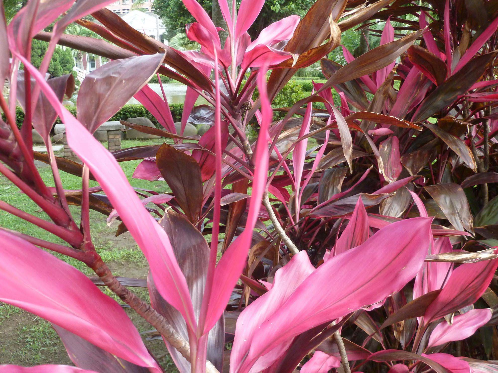
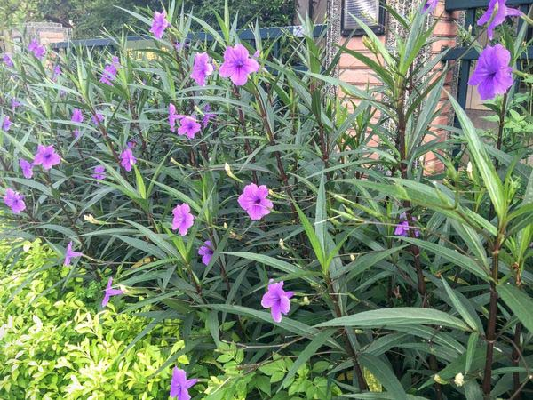

生態環境
植物
1.阿勃勒
 (圖片來源:內湖樂群一路上的-阿勃勒)
(圖片來源:內湖樂群一路上的-阿勃勒)
英文名：Golden Shower Tree , Pudding Pipe Tree
學名：Cassia fistula Linn.
葉為偶數羽狀複葉，長60~80公分，小葉對生，長卵形或長橢圓形，中肋顯著於背面強烈隆起，葉面平滑，背面粉白狀，全緣，顏色鮮亮，基部略膨大。
夏季開金黃色花，腋生， 數目甚多，排列成總狀花序，花序成串下垂，花落後結出長圓筒狀不開裂莢果，莢果顏色由綠轉黑褐，成熟需時一年，常見今年的花與去年的果並存樹上，種子外之組織味甜可食。
2.印度紫檀
 (圖片來源:印度紫檀 @ 一個人與花草的生活 :: 隨意窩 Xuite日誌)
(圖片來源:印度紫檀 @ 一個人與花草的生活 :: 隨意窩 Xuite日誌)
英文名：Rose Wood , Burma Coast Padauk
學名：Pterocarpus indicus Willd.
葉為奇數羽狀複葉， 長15~35公分，小葉互生，5~12枚，偶爾有3枚者，卵形或長橢圓形，葉長5～10公分，葉寬3～6公分，先端銳而尾尖，基部鈍或圓，薄革質，中肋顯著，葉緣全緣略有波浪狀，葉脈細，葉面平滑。
兩性花，左右相稱，總狀花序，花梗與花萼同長，花黃色，蝶形，萼片5枚，倒圓錐形，花期約在4~5月。莢果扁圓形，大小約4公分，中央肥厚內藏種子1粒，似荷包蛋，而豆莢的外緣有一圈平展的翅，將印度紫檀的木材剖開，會流出紫色汁液，故名之為印度紫檀。
3.朱蕉
(圖片來源:朱蕉)別名：紅竹、紫千年木
學名：Cordyline fruticosa
多年灌生木，株高為1~2公尺。葉片為紅色、披針形，叢生。
4.翠蘆莉
(圖片來源:只綻放一天的花 - 紫花翠蘆莉( Britton Ruellia )花語：希望、理想 @ 飛鳥FiFi的筆記本 :: 痞客邦 PIXNET ::)別名：蘭花草、藺花草、紫花萱莉草
學名：Ruellia coerulea
生長迅速，植株強健，具有耐修剪及耐淹水優點，廣泛應用於公園、學校、花壇、綠籬及盆栽等。
5.風鈴木
學名：Tabebuia rosea
掌狀複葉，對生，小葉五片，橢圓狀長橢圓形至橢圓狀卵形，小葉柄長。
具觀賞價值，常見於新樂帶城市的公園或花圃，乾季時，花朵繁盛，可供觀賞。

 (圖片來源:貓 步 連 環: 黃 花 風 鈴 木)
(圖片來源:貓 步 連 環: 黃 花 風 鈴 木)
6.垂柳
英文名：Weeping Willow
學名：Calix babylonica L.
株高10~16公尺，幹粗大，樹皮深灰色，小枝細長，柔軟而下垂。葉片腺狀披針形或狹披針形，邊緣有細鋸齒。
2~3月開花，葇荑花序。蒴果，種子有毛。垂柳主要用途為庭院樹、遮蔭樹或行道樹。
7.苦楝
 (圖片來源:苦楝 @ 一個人與花草的生活 :: 隨意窩 Xuite日誌)
(圖片來源:苦楝 @ 一個人與花草的生活 :: 隨意窩 Xuite日誌)
英文名：China Tree , China Berry
學名：Melia azedarach Linn.
落葉喬木，台灣原生種，高可達15公尺以上，樹皮灰褐色，有深刻不規則縱裂紋。葉序：大多2回奇數羽狀複葉大葉互生小羽片對生，小葉3~5對。葉形：卵形或披針形，葉端銳，歪基。
春天開花，花具香味，是優良的園藝樹、行道樹，適合作為海邊造林的樹種。生長迅速，是荒山造林的優良樹種。
(資料來源：《走讀康橋二三事─戶外體驗與閱讀課程》)
生物
1.鳥類
夜鷺、紅鳩、洋燕、白頭翁、灰頭鷦鶯、褐頭鷦鶯、 綠繡眼、麻雀
 （夜鷺）
圖片來源:紅樹林生態教育館:夜鷺
（夜鷺）
圖片來源:紅樹林生態教育館:夜鷺
 （綠繡眼）
圖片來源:
（綠繡眼）
圖片來源:2.爬蟲類
蝎虎
(圖片來源:數位教學資源網)
3.兩棲類
澤蛙
4.魚類
7 種魚種，以外來種居多
吳郭魚、鯽魚、鯉魚跟泰國鱧等，而原生種僅 2 種白鰻及泥鰍
(資料來源: 台中地區旱溪排水整治及環境營造規劃 )